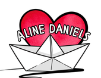
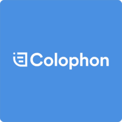
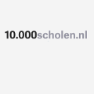
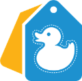
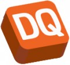

Other projects
OpKraambezoek.nl is a free service to plan and manage maternity visits. New parents share a link, visitors pick an available time slot themselves, and everyone receives a confirmation by email.
WBSO Bot is an AI-driven service that helps users compile their applications for the WBSO subsidy by posing pertinent questions about their projects, such as technical challenges and costs. The bot assists through the entire process, from drafting the application to providing tips for improvement and generating a downloadable project form for submission.

The website Aline Daniels focuses on schema therapy and offers products like modi cards, which are tools in schema therapy, featuring various emotional and coping modes. These cards, sold in sets, are designed to aid in the therapeutic process by illustrating different psychological states and behaviors.
Previous projects and clients
LTO Network enables collaboration between multiple organizations via decentralized workflows, anchored on a hybrid blockchain. Arnold was lead architect and co-founder, overseeing protocol design and blockchain pilots for the Dutch Ministry of Justice, UN-Habitat, and NEN.
LegalThings is an application aimed at digitalizing paper-intensive industries like lawyer firms, accounting firms and HR departments. With LegalThings you can control the full document life cycle online; purchasing legal templates, creating documents, collaboration, reviewing, signing and storage.
Cloud9 is a full-featured IDE that runs in the browser. It enables developers to get started with coding immediately with pre-configured workspaces, collaborate with their peers with collaborative coding features, and web development features like live preview and browser compatibility testing. Cloud9 has been aquired by AWS.
Plinkr helps counselors, consultants, and municipalities to get the home administration in order together with the client. The site also provides price comparisons between service providers, notifying the client and/or care providers when it's possible to switch.

Colophon is a publication platform for creating online reports, targeting governments and institutes. The platform provides an intuitive UI for creating rich and interactive reports. The reports are published as static HTML.
MyRadio was an interactive internet radio, owned by Netherlands' largest radio company Sky Radio Group. MyRadio offered 30 stations, each carefully created by music directors and personalized by users via likes and dislikes. MyRadio has been aquired by a third party and discontinued as standalone application.
Fiestainfo is a party calendar and site for party pictures, catering to the Dutch club scene. The website features social networking, geo-positioning, and advanced access control.

10.000scholen.nl provides detailed information about all primary and secondary schools in the Netherlands. This includes statistical data like the performance of the school, age and gender of the teacher and education level of the parents.

Saleduck is the company behind the popular coupon sites Saleduck and Solden, as well as other websites like Gerust.nl, Gratis op te halen en Kamers in Nederland.
Firm24 provides online corporate services for a highly compative price. It can do so by automating it’s services, including starting a company, maintaining a company, and generating documents.
Talpa Radio is the biggest and most important music entertainment company in the Netherlands. Radio stations 538, Radio 10, Sky Radio, and Radio Veronica reach over 7 million listeners every week.
PeerReach analyses Twitter users and tweets to find out who's influential in a specific field of expertise. PeerReach isn't interested in the number of followers but looks at the quality of followers. It also takes demographics, interaction and awareness into account.
ChartLeaders was the website around the developing stages theory by Marc van der Erve. The website helped to popularize and spread the theory by gathering information about public figures and organizations through several web APIs and combining these with information provided by an analyst to create a report.

DQ Webshops runs several large Magento webshops around Europe, selling wall brackets and mounting systems for LCD, Plasma and LED TVs.
Helder Hosting was a Dutch hosting company aimed to provide a solid and affordable service to novice website owners. Helder Hosting has been acquired by VIP Internet.